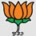

| HOME | THE PARTY | CORE ISSUES | MEDIA RESOURCES |
|---|
The history of the Bharatiya Janata Party starts with the Bharatiya Jana Sangh (abbreviated BJS). The BJS was a political party created
by Syama Prasad Mookerjee in 1951. At that time, the Indian National Congress was the political party that ruled India. The BJS's goal
was to stop the Indian National Congress's policies.
Many people thought the BJS was a part of the RSS because they had the same ideas on leading the Government of India.
Pandit Deendayal Upadhyaya was the leader of the Bharatiya Jana Sangh from 1953 to 1968. A profound philosopher, committed organization man and a leader
who who maintained the highest standards of personal integrity and dignity in public life, he has remained a source of ideological guidance and moral inspiration for
the BJP since its inception. His treatise Integral Humanism is a critique of both communism and capitalism. It provides a holistic alternative perspective for
political action and statecraft consistent with the needs of the human race and the sustainability of our natural hab itat.
In the 1967 Indian elections, many political parties, including the Bharatiya Jana Sangh, joined up together to win a
majority of the seats of many Indian states, including Madhya Pradesh, Bihar, and Uttar Pradesh. This was the first time the BJS had held any political office.
The Bharatiya Janata Party (abbreviated BJP) is one the two largest political parties of India. (The other is the Indian National Congress).
Since the Indian general election in 2014, the BJP has 282 seats in the Lok Sabha, the lower house of the Parliament of India.
The BJP's political beliefs are similar to the beliefs of the Rashtriya Swayamsevak Sangh (RSS). The RSS is a controversial organization in India accused of
being Hindu nationalist.